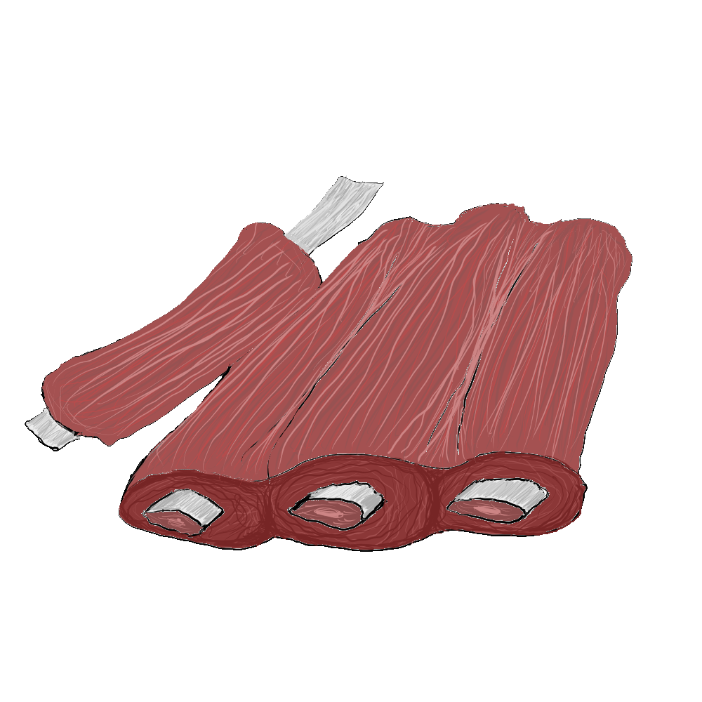
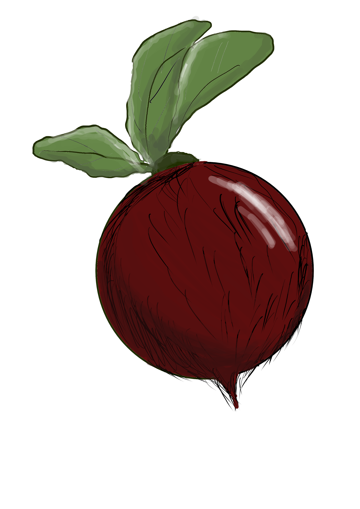
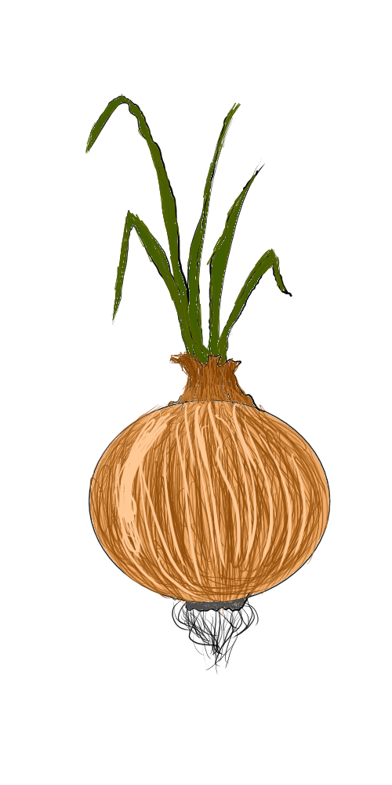
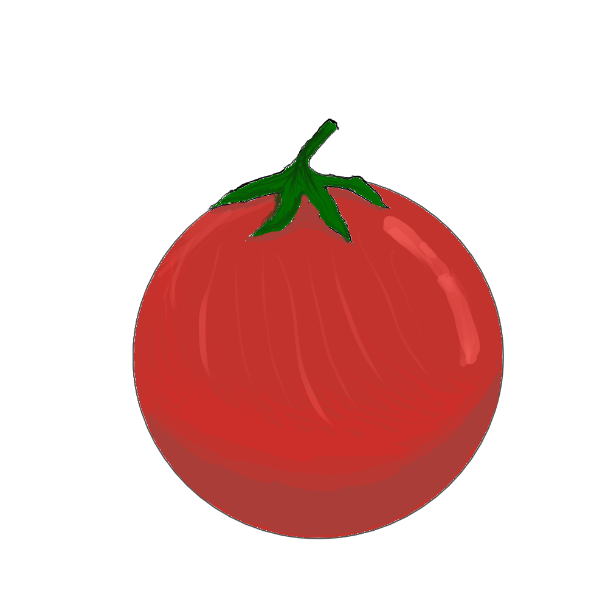
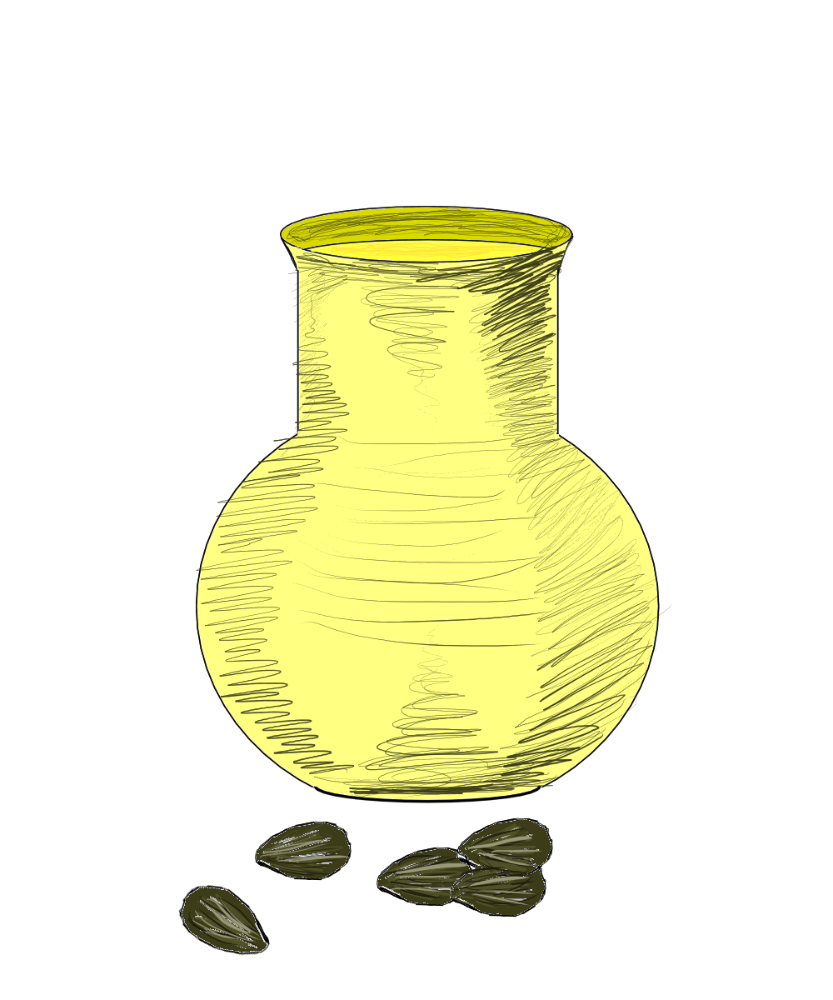
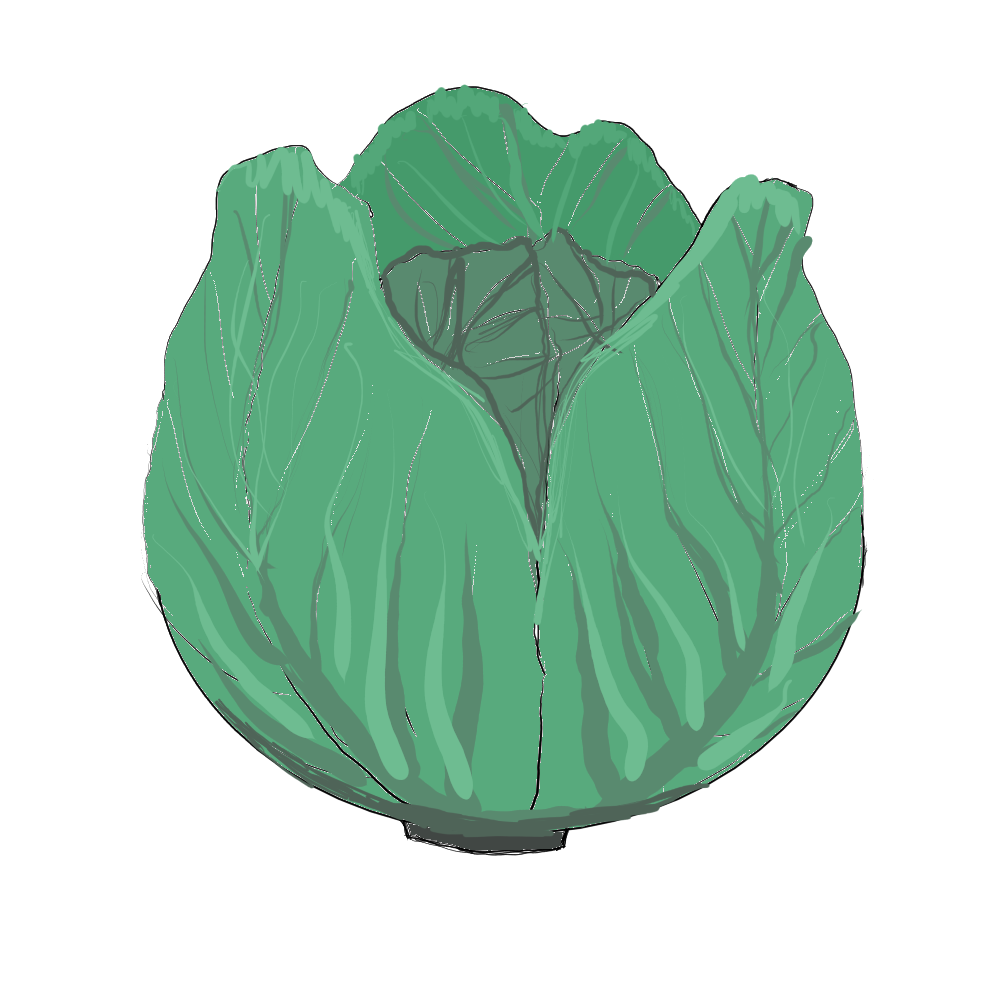
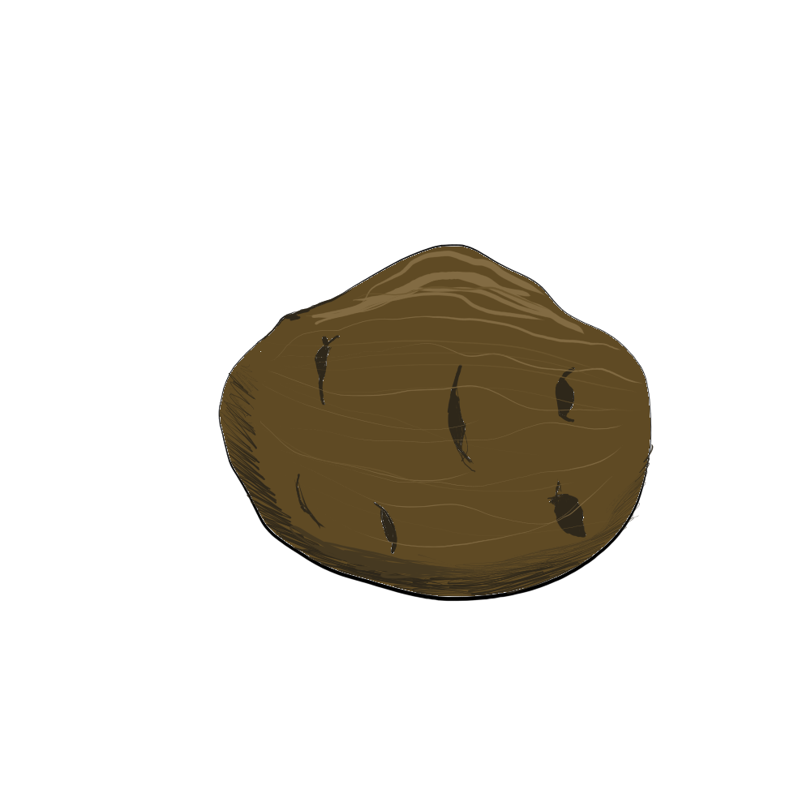

Рецепт борщу
Борщ – класичне блюдо слов'янської кухні. Борщ густий овочевий суп, головний інгредієнт якого – буряк. Як зварити смачний борщ - все залежить тільки від вас. У кожній сім'ї є свій рецепт як приготувати борщ - хтось додає гриби, хтось квасолю. Борщ - заправний овочевий суп, люблять у багатьох країнах. У Київській Русі борщ готували з їстівного листя борщівника (звідси назва). Пізніше стали варити з буряком (звідси колір). З XIX століття додають картоплю.
Класичний рецепт борщу:
- вода - 1,5–2 л.
- свинина або яловичина на кістці - 400 г.
- буряк - 2 шт. (невеликі)
- морква - 1 шт.
- цибуля - 3 шт. (середні)
- томатна паста - 2 ст. л.(або свіжі томати - 4 шт. (невеликі)
- соняшникова олія - 4-5 ст. л.
- капуста білокачанна свіжа - 300 г.
- картопля - 4 шт. (середні)
- сіль, лавровий лист, зелень - за смаком
Приготування:
Варимо бульйон - візьміть 3-літрову каструлю. Налийте в неї 1,5–2 літра води, покладіть м'ясо. Поставте на середній вогонь. Слідкуйте за бульйоном, перед закипанням зніміть піну. Бульйон буде смачнішим, якщо використовувати саме м'ясо на кості. Коли закипить, накрийте каструлю кришкою і варіть на повільному вогні годину-півтори.
Вода

Мʼясо
Робимо зажарку - поки вариться бульйон, посмажимо овочі. Вимийте і почистіть буряк, моркву і цибулю. Буряк натріть на крупній тертці, а моркву - на середній. Цибулю наріжте кубиками. Налийте олію на пательню, увімкніть середній вогонь. Спочатку смажте цибулю і моркву (5 хвилин), потім додайте буряк. Буряк посипте лимонною кислотою або збризніть соком свіжого лимона. Завдяки цьому борщ буде по-справжньому червоним. Смажте овочі ще 5 хвилин. Після цього додайте томатну пасту, перемішайте і залиште на газу ще на 5-7 хвилин.

Буряк
Морква

Цибуля

Помідор

Соняшникова олія

Білокачанна капуста

Картопля
Збираємо борщ - коли бульйон звариться, вийміть з нього м'ясо. Поки м'ясо остигає, киньте в бульйон нашатковану капусту. Через 5-10 хвилин додайте нарізану соломкою картоплю. Поки вариться картопля, відокремте м'ясо від кістки і наріжте кубиками. Поверніть м'ясо в суп. Посоліть за смаком. Додати засмажку. Перемішайте. Додайте лавровий лист і дрібно порізану зелень. Накрийте каструлю кришкою і варіть ще 5-7 хвилин. Борщ готовий.
Зелень, сіль та лавровий лист
Подача на стіл - борщ можна їсти відразу після приготування. Але, як правило, на наступний день він ще смачніший. Розлийте борщ по глибоких тарілках. Додайте сметану, свіжу зелень, чорний мелений перець (якщо любите погостріше) і часточку лимона (якщо хочете кисліший). Їдять борщ з житнім хлібом або здобними булочками, натертими часником.